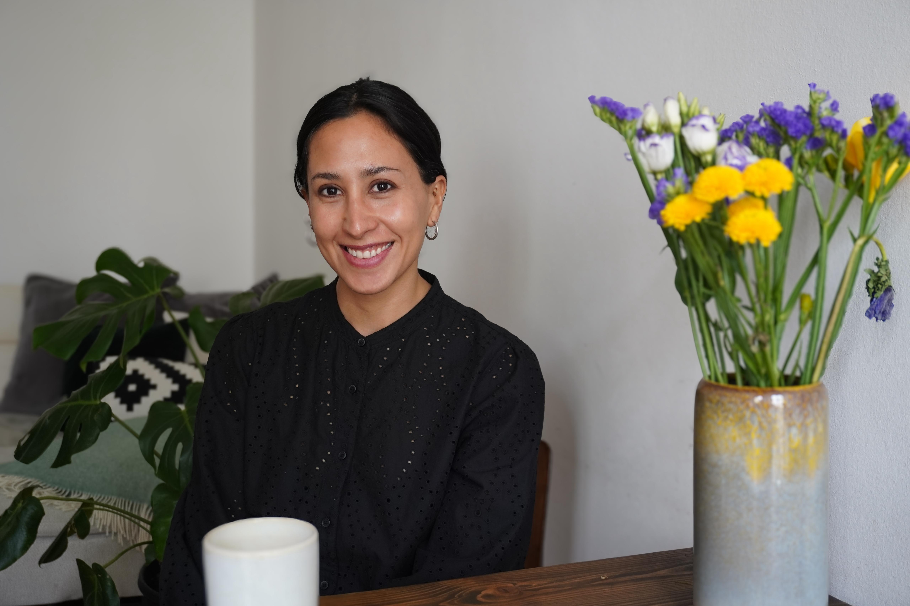

WELCOME I’M PAOLA AND I’M HERE TO HELP YOU REBUILD YOUR RELATIONSHIP WITH FOOD.

TESTIMONIALS
"I always felt heard and comfortable in the consultations with Paola. I learnt to love the process and all the changes within that made my life better. Now I have many tools and strategies that I can use on my daily life."
- Karla
"Paola is an excellent professional. Thanks to her support, I’m now able to take care of myself without having extreme behaviors. She has helped me to feel more at peace with food and enjoy going out with friends, family lunches, and trips."
- Claudia
"Throughout my nutritional consultations with Paola I have started to heal my relationship with food. She’s helped me acquire tools to reduce and manage binge eating episodes, as well as avoid disordered eating. I feel much more nourished and in tune with my body now.
- Aranza
HI THERE! I'M PAOLA
I help my patients rebuild their relationship with food,
movement and their body.
I ́m a nutritionist specialized on eating disorders and disordered eating. I hold a Master ́s
degree in Eating Disorders and Clinical Nutrition from University College London, and I ́ve
completeda training in enhanced cognitive therapy at the University of Oxford, as well as in
intuitive eating at the London Centre for Intuitive Eating.
I’ve been there.
I have walked the same path that many of my patients are on. I haven’t always
had a healthy relationship with food; I, too, battled with an eating disorder. At one point, I
though I had it “under control”, but the truth was that the eating disorder was controlling my
life. It wasn’t just restricting my food intake; it was stealing the joy from my life and occupying
way too much space space in my mind.
My unique perspective. My journey of overcoming an eating disorder, combined with my
formal education, has given me a profound understanding and deep compassion for my
patients. While no two experiences are the same and comparisons are often unhelpful, I want
you to know that recovery it’s possible. it’s possible to make peace with food and your body,
and to regain the joy in life that the disorder may have taken from you.
Taking the first step.
Reaching out for support takes immense courage. You might not be
entirely sure of what you need right now, but you know that something isn’t quite right with
your eating and your relationship with food. You’re in the right place to start your journey
toward healing and recovery.
Are you ready?
Wether you are suffering from an eating disorder or struggling
with your relationship with food, I’m here to guide you through
this transformative process. The treatment and sessions are
tailored to your unique experience and where you are at the
moment. During our consultations, we focus less on food itself,
and more on helping you establish regular eating and eventually
having a more natural relationship with food. The treatment
evolves according to your progress. While having a healthy
weight it’s important, it’s not the main focus of therapy. We work
together to create balanced meals and appropriate portions.
I I will accompany you through this transition with kindness and
compassion. I provide a safe space for you to rebuild trust around
food and your body. This is an ideal starting point for those
who seek additional support. You recognize you deserve better
and are taking that first step.
In this 10 week program, we go through the 10 principles of
Intuitive Eating to make peace with food and your body.
Through the program you will reconnect with your body ́s hunger
and satiety signals, and we ́ll delve into gentle nutrition and
movement. The program is designed for a small group (10
participants), who are on the journey to break free from diet
culture. It’s also an excellent option for clients who wish to revisit
or build upon the work we’ve done in our 1:1 sessions.
The next program begins on the February 10, 2024. You can
apply now to secure your spot!
* Include session recordings, full text studies supporting IE
Principles, working material and assignments, access to the
WhatsApp community group.